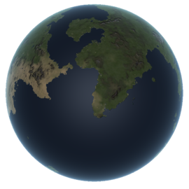

Kerbin
Kerbin is the home planet of the Kerbals, the location of the Space Center and other facilities, and the main focus of Kerbal Space Program. It is also the Earth analog for the game but, unlike Earth, it has two moons instead of one. They are named Mun and Minmus.
In- Game Description:
A unique world, Kerbin has flat plains, soaring mountains and wide, blue oceans. Home to the Kerbals, it has just the right conditions to support a vast, seemingly undepletable population of the eager green creatures. Reaching a stable orbit around Kerbin is one of the first things budding space programs strive for. It is said that those who can get their ship into orbit are halfway to anywhere.
Home Page